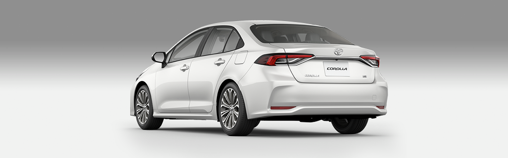

Toyota

-
MOTOR
Sistema Híbrido Flex com 101 cavalos de potência no motor a combustão e 72
no motor elétrico. Torque de 14,5 Kgf.m no motor a combustão (abastecido 100% com etanol)
e 16,6 Kgf.m no elétrico.
-
TRANSMISSÃO
Automática - Hybrid Transaxle CVT com botão seletor: Normal, ECO,
Power e EV (Electric Vehicle).
-
ÁUDIO
Sistema multimídia Toyota Play+ com tela sensível ao toque de 8", rádio AM/FM,
função MP3, entrada USB, Bluetooth® e conexão para smartphones e tablets Android Auto® e Apple CarPlay®.
-
ACABAMENTO EXTERNO
Teto solar elétrico com função antiesmagamento.
Acabamento Black Piano na grade inferior dianteira e cromado na moldura superior dos vidros.
Espelhos retrovisores externos eletrorretráteis automáticos com indicadores de direção e regulagem elétrica.
Rodas de liga leve aro 17" com acabamento na cor preto brilhante.
-
ACABAMENTO INTERNO
Partes revestidas de couro e material sintético nas cores bege e marrom12.
Painel central em Black Piano. Difusores de ar com acabamento na cor prata.
Espelho retrovisor interno com antiofuscamento eletrocrômico.
-
SEGURANÇA
Assistente de pré-colisão (PCS) com alerta sonoro e visual e, se necessário, frenagem automática.
Sete airbags (dois de cortina, um de joelho para motorista, dois frontais e dois laterais para motorista e passageiro),
barra de proteção no interior das quatro portas, controle eletrônico de estabilidade veicular (VSC),
controle eletrônico de tração (TRC), assistente de subida em rampa (HAC), sistema de alerta de mudança de faixa (LDA),
controle de velocidade de cruzeiro adaptativo (ACC) e sistema de alarme volumétrico e perimétrico.
Acendimento automático de faróis e lanternas em LED e luzes diurnas (DRL) nas lanternas dianteiras.
Farol alto automático (AHB).
-
PRINCIPAIS EQUIPAMENTOS
Computador de bordo com visor multifunção e tela TFT de 7,0” digital e colorida.
Indicador de direção econômica no painel de instrumentos (Hybrid System). Start Button/Push Start e Smart Entry.
Limpador do para-brisa intermitente com sensor de chuva. Ar-condicionado automático digital dual zone frio e quente
com filtro antipólen. Banco do motorista com regulagem elétrica para oito ajustes (altura, distância,
inclinação e altura com distância) e do passageiro dianteiro para quatro ajustes (distância e inclinação).